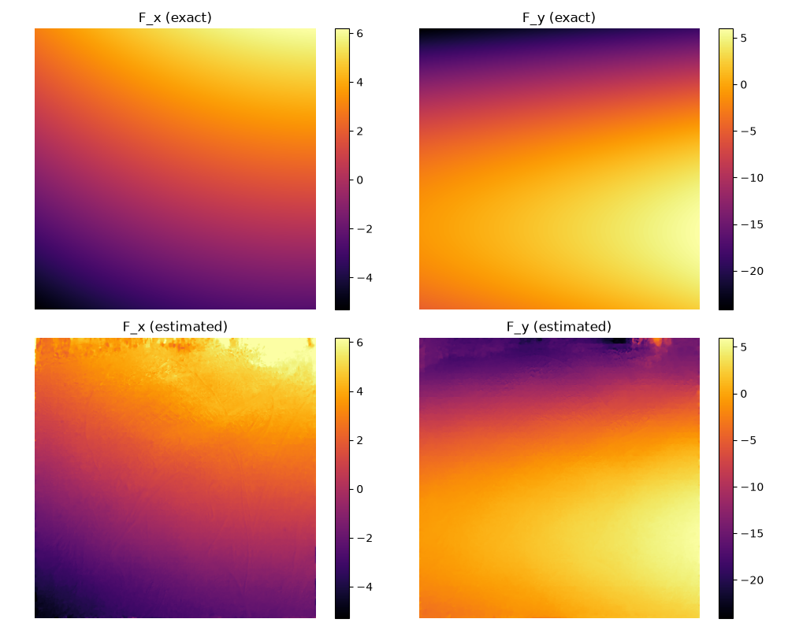
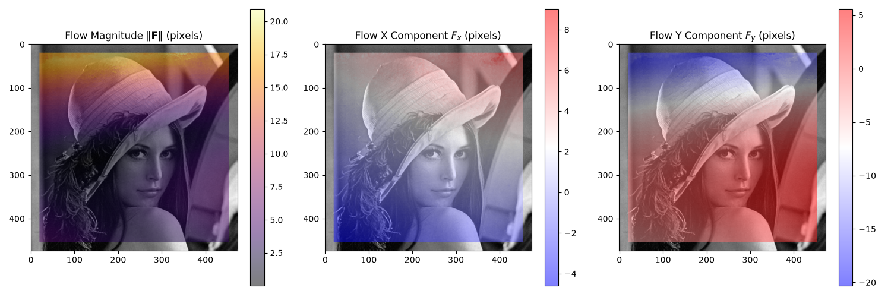
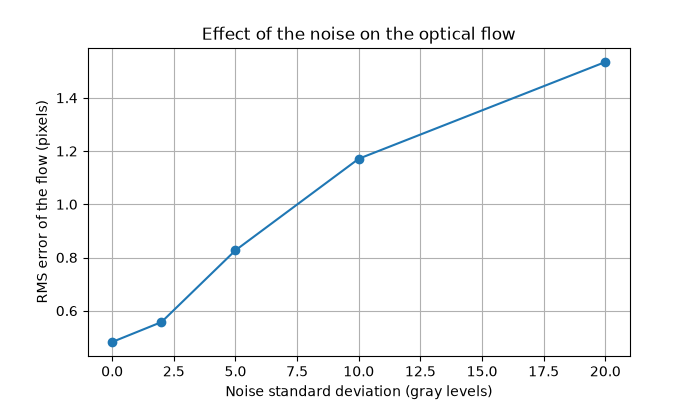

Note
Go to the end to download the full example code.
Optical flow between two images#
pysdic.compute_optical_flow() computes the dense displacement field between two
images with the DIS algorithm of OpenCV:
It is compared here with the exact flow of a known distortion.
Two images with a known flow#
The second image is the first one distorted by a Zernike distortion in pixels: with
method="distort", each pixel \(\vec{x}\) is moved to \(D(\vec{x})\), so the
exact flow is \(F(\vec{x}) = D(\vec{x}) - \vec{x}\). The pixel [i, j] (row,
column) is at the image point \((x, y) = (j, i)\).
import matplotlib.pyplot as plt
import numpy
from pysdic import ZernikeDistortion, distort_image, get_lena_image, quantize_image
image = get_lena_image().astype(numpy.float64)
height, width = image.shape[:2]
center = numpy.array([(width - 1) / 2, (height - 1) / 2])
zernike = ZernikeDistortion(
[
0.8541972545746392, -5.468596289790535, -5.974287819021697, 14.292956075116104,
2.1403205479372627, 4.544169430137205, -0.10099732464199339, 0.4363509204067417,
-0.5106374355681896, -5.770087687650705, -0.39147505788710696, 11.699411273002498,
], # Small distortion, in pixels
radius_x=numpy.linalg.norm(center),
center=center,
)
distorted = distort_image(image, None, zernike, method="distort", interpolation="linear") # float64
rows, columns = numpy.indices((height, width))
image_points = numpy.stack((columns, rows), axis=-1).astype(numpy.float64) # (H, W, 2)
exact_flow = zernike.apply(image_points).x - image_points # (H, W, 2)
print(f"Exact flow: up to {numpy.linalg.norm(exact_flow, axis=-1).max():.2f} pixels")
Exact flow: up to 24.30 pixels
Estimation of the flow#
The images are quantized on 8 bits for OpenCV. The flow is returned as two arrays \((F_x, F_y)\) of shape \((H, W)\).
from pysdic import compute_optical_flow
image_8bits, distorted_8bits = quantize_image(image, bit_depth=8), quantize_image(distorted, bit_depth=8)
flow_x, flow_y = compute_optical_flow(image_8bits, distorted_8bits)
fig, axes = plt.subplots(2, 2, figsize=(10, 8))
for row, (name, fx, fy) in enumerate((("exact", exact_flow[..., 0], exact_flow[..., 1]), ("estimated", flow_x, flow_y))):
for column, (component, values, reference) in enumerate((("F_x", fx, exact_flow[..., 0]), ("F_y", fy, exact_flow[..., 1]))):
mappable = axes[row, column].imshow(values, cmap="inferno", vmin=reference.min(), vmax=reference.max())
axes[row, column].set_title(f"{component} ({name})")
axes[row, column].axis("off")
fig.colorbar(mappable, ax=axes[row, column])
plt.tight_layout()
plt.show()

pysdic.display_optical_flow() draws the flow on the image, here 20 pixels away from
the borders.
from pysdic import display_optical_flow
display_optical_flow(image_8bits, flow_x=flow_x, flow_y=flow_y, display_region=(20, 20, width - 40, height - 40))

Effect of the noise#
A Gaussian noise is added to the distorted image (see pysdic.add_gaussian_noise()),
and the error of the estimated flow is measured 20 pixels away from the borders.
from pysdic import add_gaussian_noise
noise_levels = (0.0, 2.0, 5.0, 10.0, 20.0) # Standard deviation in gray levels
rms_errors = []
for k, std in enumerate(noise_levels):
noisy = quantize_image(add_gaussian_noise(distorted, std=std, seed=k), bit_depth=8)
fx, fy = compute_optical_flow(image_8bits, noisy)
error = numpy.hypot(fx - exact_flow[..., 0], fy - exact_flow[..., 1])[20:-20, 20:-20]
rms_errors.append(numpy.sqrt(numpy.mean(error**2)))
plt.figure(figsize=(7, 4))
plt.plot(noise_levels, rms_errors, marker="o")
plt.xlabel("Noise standard deviation (gray levels)")
plt.ylabel("RMS error of the flow (pixels)")
plt.title("Effect of the noise on the optical flow")
plt.grid()
plt.show()

Total running time of the script: (0 minutes 5.221 seconds)